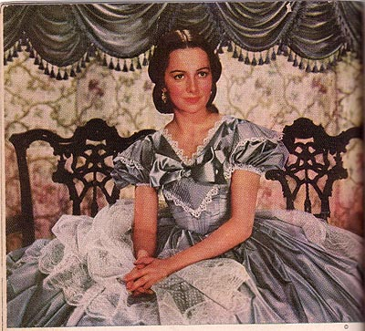

Illustration for Gone with the Wind: Motion Picture Edition
(New York: The Macmillan Company, 1940)
CAPTION: "Melanie was a tiny, frailly-built girl, who gave the appearance of a child masquerading in her mother's enormous hoop skirts. Her heavy earbobs with their long, gold fringe hung down from hoops of tidily netted hair, swinging close to her brown eyes. (See page 38)"